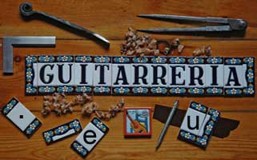

Dans cette liste, vous découvrirez qui sont les artisans se cachant derrière ces noms parfois déjà
connus, parfois moins, parfois pas
Vous en connaissez certains, d'autres vous en avez déjà entendu parler et sans doute de quelques uns n'avez vous jamais entendu le nom
Vous avez une de ces magnifiques guitares ou vous en avez déjà essayées, il y a sans doute aussi parmi ces noms certains dont vous
rêvez... chacun d'eux a son caractère, nous vous en présentons ici quelques facettes mais il y aurait encore bien plus à
en dire
Comme déjà souligné : tous méritent d'être connus pour la très haute excellence de leur art et la motivation de
leur travail, leur savoir incommensurable
Comme déjà énoncé sur une autre page, tous nous les connaissons, avec chacun d'eux nous entretenons des contacts
réguliers, des échanges d'idées entre vos demandes, nos comparatifs et leurs points de vues, des moments de privilèges à
la découverte de leur art et de leur savoir
Cette liste ne peut aussi donc que s'étoffer encore avec le temps
Et si vous avez une question concernant un luthier qui n'est pas dans notre liste, n'hésitez pas pour autant, bien sur, il est utopique de
prétendre connaître tous les luthiers du monde mais du moins nous pourrons peut-être vous aider
Nos relations professionnelles privilégiées avec les luthiers nous permettent de vous offrir "que le meilleur" et aussi si l'aventure vous tente
ou si le besoin se pose de vous proposer des guitares "sur mesure" : la plupart des luthiers avec qui nous travaillons se font un plaisir de répondre
aux moindres détails de nos demandes particulières
Nous assurons également un service professionnel d'atelier de lutherie pour les réglages spécifiques dont vous seriez demandeur sur
nos guitares ou autres ou pour tout autre travail, ajustages, réparations sur vos instruments
et... redite de ce que vous avez déjà peut-être lu sur notre page "Philosophie"...
mais si nous insistons sur ce point c'est qu'il est important
Nous vous offrons ce que vous ne trouverez nulle part ailleurs :
un voyage entre l'Andalousie et le nord de l'Europe et bien au delà dans le monde des luthiers
la comparaison possible dans un même lieu et simultanément de ce qui se fait de meilleur
chose impossible même si vous vous déplaciez chez chaque luthier
...de Córdoba à Bremen et de Chicago à Moscou ...
cela guidé par les conseils d'un luthier et guitariste sur place
Notre but est ici de développer dès que possible pour chaque luthier une page d'information objective, afin de vous faire découvrir
qui ils sont, comment ils travaillent, quelles sont les particularités de leur oeuvre.
Explorez la carte pour situer les ateliers, ou sélectionnez un nom dans la liste pour ouvrir la présentation du luthier.
Ceci afin de vous donner les éléments qui vous permettront de mieux les connaître pour mieux guider vos choix certes passionnants
mais souvent complexes et difficiles pour l'acquisition d'un de ces merveilleux instruments, ou simplement pour vous faire découvrir les
personnalités de ces fabuleux artisans
Nous vous ouvrons les portes de leur ateliers, avec respect et discrétion. En découvrant un peu des secrets de leur art c'est aussi une
part de leur âme que nous vous dévoilons avec beaucoup d'émotion
Etre luthier c'est maîtriser l'impossible, c'est l'alliance d'un savoir incommensurable et d'une science précise. L'intuition des matières,
la connaissance de la magie des bois et la précision du geste
Ces artisans hors pairs, travaillant souvent dans l'ombre, si pas ignorés même des guitaristes, méritent
d'être mieux connus
A part l'étiquette au fond de vos guitares, qu'en connaissez-vous ?
Musiciens guitaristes, vous gagnez à mieux les connaître. Entre la main qui a fait votre guitare et la main qui la joue nous tentons ici
de tisser un lien, un ténu fil d'Ariane qui vous permettra, nous l'espérons sincèrement, de vivre aussi un peu de la part de leur
art qui est lié au votre et dont l'un n'existerait pas sans l'autre.